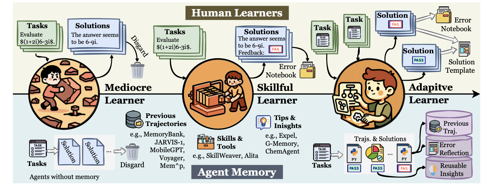
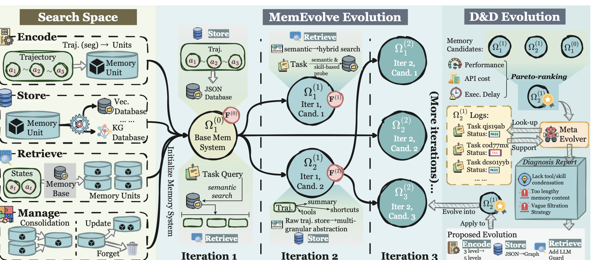
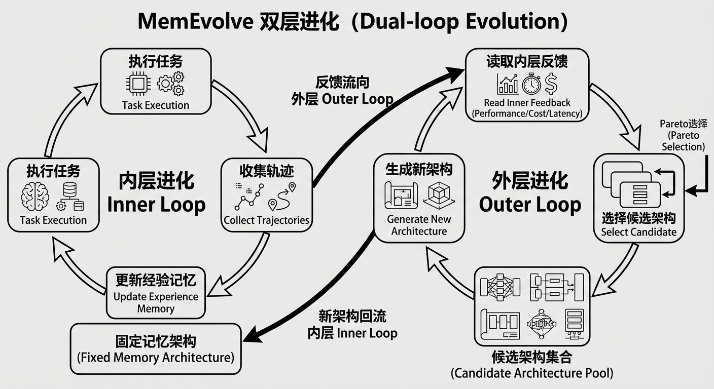
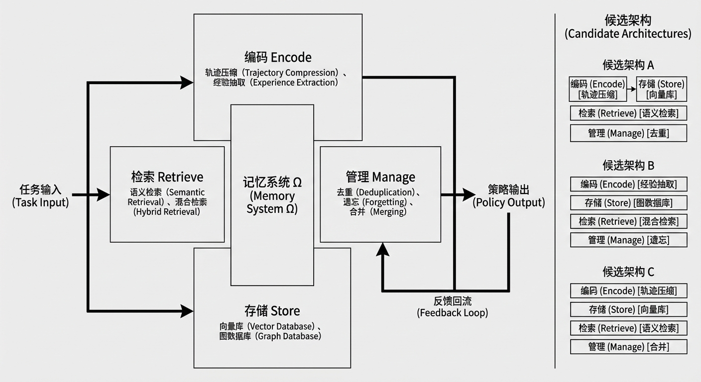
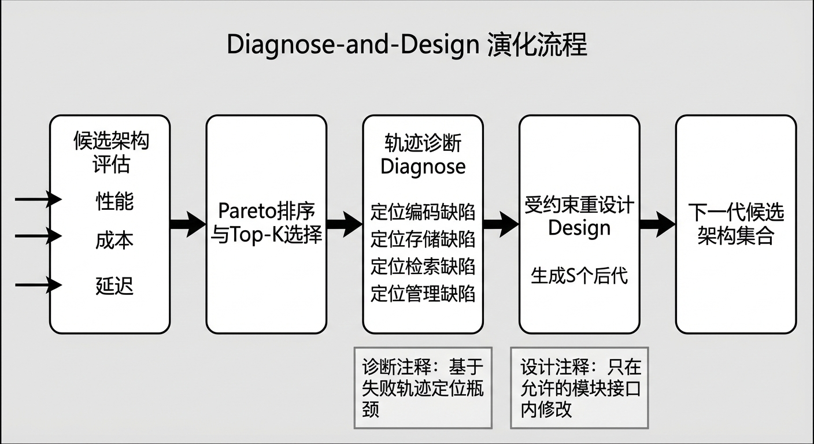
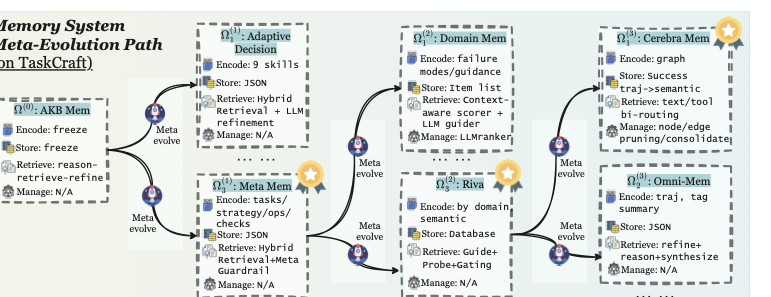
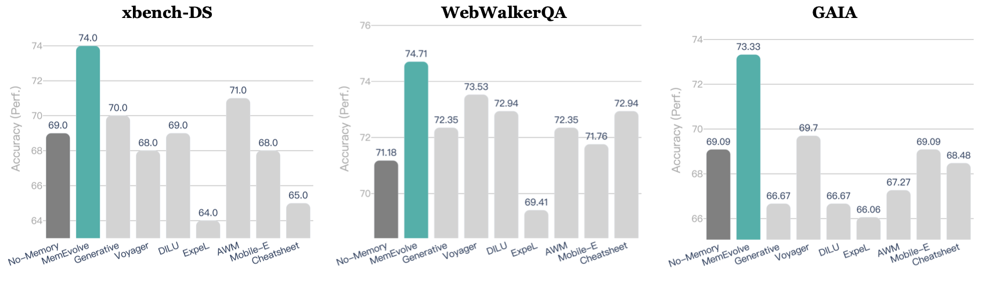
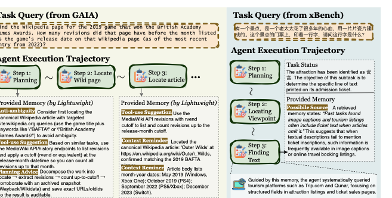

0. 快速定位：这篇到底在讲什么？
不是“怎样把记忆写得更复杂”，而是“怎样让记忆设计本身可被优化”。
容易把它误解成单纯 AutoML。实际上它依赖任务反馈做诊断，再在受约束设计空间里定向改架构。
提示：公式渲染依赖 MathJax CDN；若离线打开页面，公式可能显示为 LaTeX 源码。
0.5 阅读路线（高效且能深刻理解）
Round 1：先建立问题意识
先看 skillful vs adaptive learner，理解为什么“固定记忆架构”会成为瓶颈。
Round 2：吃透方法
看 双层进化总览，再看 Diagnose-and-Design 的可执行逻辑。
Round 4：迁移到你的课题
读 研究启发，直接抽取“记忆架构搜索空间 + 评价函数”落地方案。
1. 前置知识（只补必要的）
- Bilevel optimization：内层优化经验，外层优化架构，两层目标相互耦合。
- Pareto selection：多目标排序，性能、成本、延迟综合看，而不是只追单一分数。
- Memory modularization：把 memory 拆成 encode/store/retrieve/manage，才有“可变异、可比较”的操作空间。
- Cross-task transfer：架构若只在单数据集有效，说明可能过拟合而非学到原则。
2. 论文问题与贡献（带引用）
论文先指出当前范式的根本限制：memory 帮 agent 进化，但 memory 自己是静态的，这与“开放环境持续学习”目标冲突（见 Introduction）。
三项核心贡献：
- EvolveLab：统一实现 12 类代表性 memory 系统，并抽象成四模块设计空间。
- MemEvolve：提出 dual-evolution，联合进化经验与记忆架构。
- 实验：在多 benchmark 和多框架上报告显著增益，含跨任务、跨模型、跨框架迁移。
引用定位：EvolveLab 章节、方法章节、实验章节。
2.5 逐句精读（保姆级拆解）
精读 1：为什么要把 memory 拆成四模块？点击收起
如果 memory 是整体黑箱，就无法“定位缺陷 -> 定向修改”。拆分后每轮迭代可明确是编码、存储、检索还是管理出问题。
精读 2：外层进化和普通网格搜索有何不同？点击收起
MemEvolve 不是盲搜，它先做诊断（基于轨迹失败模式），再在约束空间中设计后代架构，属于 evidence-driven architecture editing。
精读 3：为什么强调成本和延迟？点击展开
很多“更强” memory 方案靠更高调用成本堆出来。论文把 cost/delay 纳入外层选择，逼迫系统学会“有效且可部署”。
3. 方法详解（流程 + 关键机制）
关键图 1：skillful learner 到 adaptive learner

它证明了什么：论文目标是第三层，元认知式地调整记忆机制。
如何避免误读：这不是心理学比喻而已，它直接对应后文的架构级优化目标。
详细读图顺序：先左到右看三类学习者，再回看 caption 中“final regime”对应方法定义。
对应结论：固定 memory 只能到 skillful，难到 adaptive。
误读风险：不要把 adaptive 理解成“更多提示词”，它指架构行为可变。
关键图 2：MemEvolve 总体框架

它证明了什么：memory 不再是固定超参，而是可持续优化对象。
如何避免误读：外层不是每步都改架构，而是按迭代批次更新。
详细读图顺序：先看内层执行反馈，再看外层选择与重设计，再看下一代候选集。
对应结论：双层闭环可同时提升性能和可迁移性。
误读风险：若忽略设计空间约束，外层很容易变成不可复现的 ad-hoc 搜索。
补充图：双层进化（Inner/Outer Loop）

如果你要给同学讲“为什么这是元进化而非普通记忆增强”，这张图最直观。
Diagnose-and-Design 的可执行化
for each iteration k:
inner loop: run candidates, collect (Perf, Cost, Delay)
select top-K by Pareto rank + Perf tie-break
for each parent:
diagnose failures from trajectories
redesign encode/store/retrieve/manage
generate S descendants
对应公式与叙述位置：paper.tex 中 Dual-Evolution + Diagnose-and-Design 小节。
补充图：四模块设计空间

右侧候选架构 A/B/C 对应论文里“同一设计空间内不同组合”的思想。
补充图：Diagnose-and-Design 外层流程

重点是“先诊断再改”，避免盲目搜索。
关键图 3：架构进化路径（AgentKB -> Riva -> Cerebra）

它证明了什么：进化不是随机变异，而是朝更“agentic + efficient”方向演化。
如何避免误读：路径图表示代表性轨迹，不是唯一进化路线。
4. 实验怎么读（证据链）
关键图 4：主结果对比（intro-1）

它证明了什么：架构级进化可带来可观增益，文中报告最高提升到 17.06%。
如何避免误读：需结合正文设置确认底层框架与模型，避免跨设置直接比绝对值。
关键 claim 对照
- Claim 1：在 SmolAgent、Flash-Searcher 等框架上有稳定增益。证据见主表（WebWalkerQA/xBench/TaskCraft/GAIA）。
- Claim 2：跨任务迁移成立。证据是“在 TaskCraft 进化出的 memory”可迁移到 WebWalkerQA 与 xBench。
- Claim 3：跨 LLM 迁移成立。证据是 GPT-5-mini 进化出的 memory 对 Kimi K2、DeepSeek V3.2 仍有效。
- Claim 4：不是单纯堆成本。证据见 cost/delay/steps 对照表，性能提升同时成本量级可控。
关键图 5：真实任务中的记忆实例化（case）

它证明了什么：进化后的 memory 在真实执行流中“可用”，不是仅离线指标好看。
如何避免误读：个例主要用于机制展示，最终仍应以主表统计结果为准。
5. 研究启发
- 方向一可以不只做“记忆内容优化”，而是做“记忆架构优化”，这是更高阶问题。
- 先定义统一设计空间，再做进化，否则不同 memory 方法无法公平比较。
- 把成本和延迟并入目标函数，能避免只在论文分数上优化而失去部署价值。
- 跨任务、跨模型迁移是检验 memory 原理性的核心指标，不是可选项。
6. 自测题
- 如果只进化 retrieve，不改 encode/store/manage，会遇到什么上限？
- 为什么外层选择要用 Pareto，而不是只按 Perf 排序？
- MemEvolve 与普通超参搜索在“诊断信号来源”上有何本质区别？
- 你要在方向一里实现一个最小版 MemEvolve，第一版会选哪两个模块先开放进化？
7. 图索引（回看入口）
本节只做索引，不重复放图。图像文件位于 figs/，源码位于 source/。
8. 引用与文件位置
主文件：/Users/xiaoxiaoxuan/Downloads/长程记忆/papers/memevolve/source/paper.tex
EvolveLab 章节：/Users/xiaoxiaoxuan/Downloads/长程记忆/papers/memevolve/source/paper.tex（Section: EvolveLab）
MemEvolve 方法章节：/Users/xiaoxiaoxuan/Downloads/长程记忆/papers/memevolve/source/paper.tex（Section: MemEvolve）
实验章节：/Users/xiaoxiaoxuan/Downloads/长程记忆/papers/memevolve/source/paper.tex（Section: Experiments / Main Results）
论文 PDF：/Users/xiaoxiaoxuan/Downloads/长程记忆/papers/2512.18746_MemEvolve.pdf